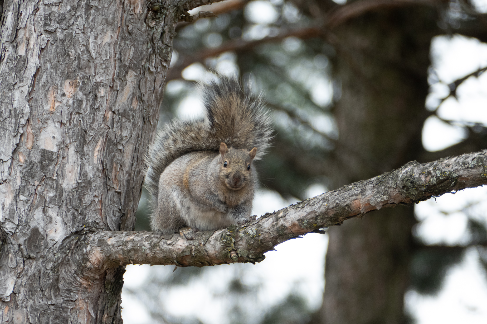
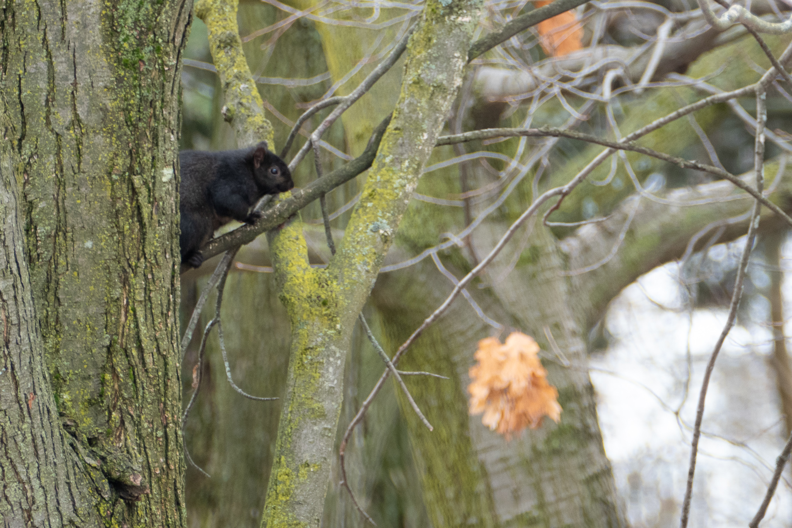
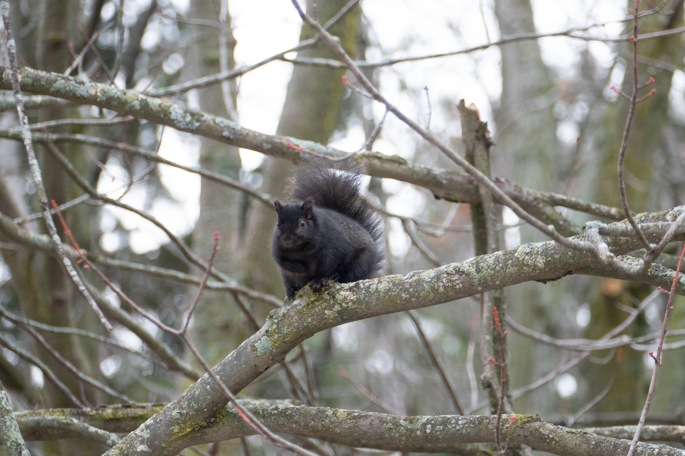
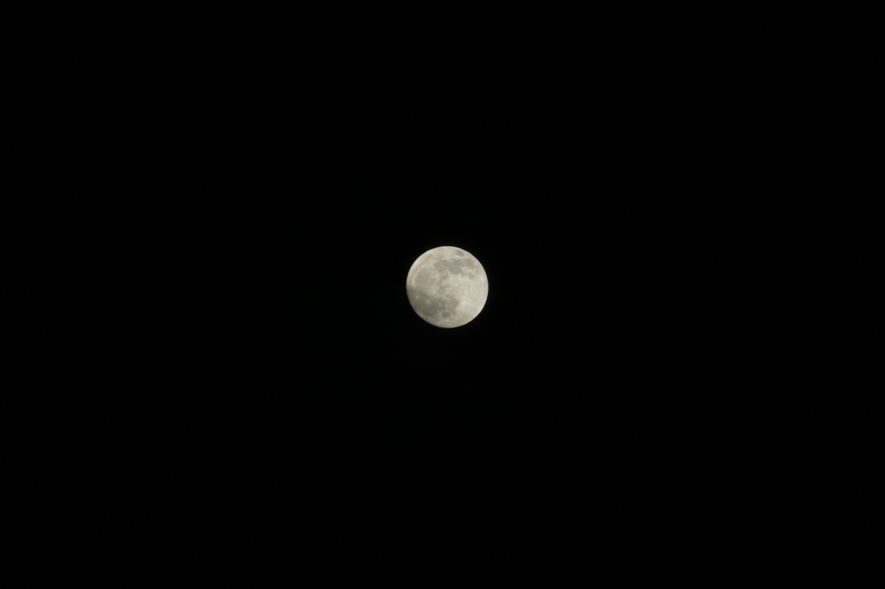

Photography
Some photos I've taken:
Squirrels
  Astrophotography
I haven't explored this type of photography all that much but I managed to get some severely under exposed images of M42 and M45.
M45

M42

The Moon
Home Page 1 Page 2 Page 3 Page 4